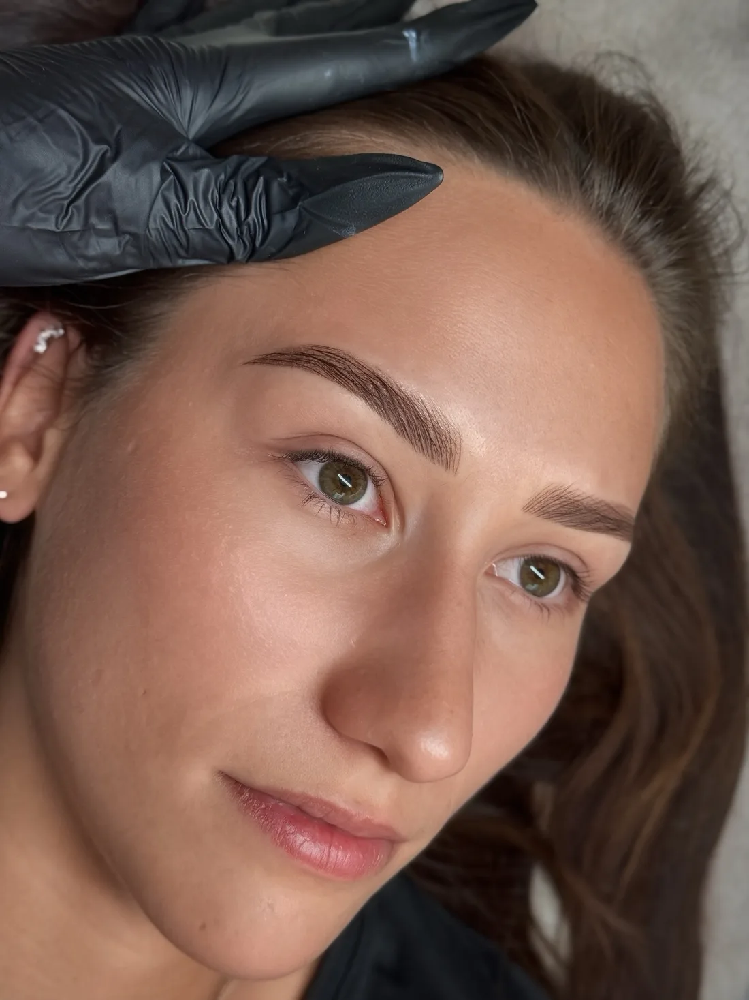
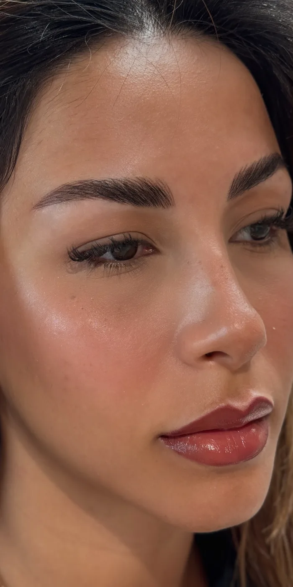
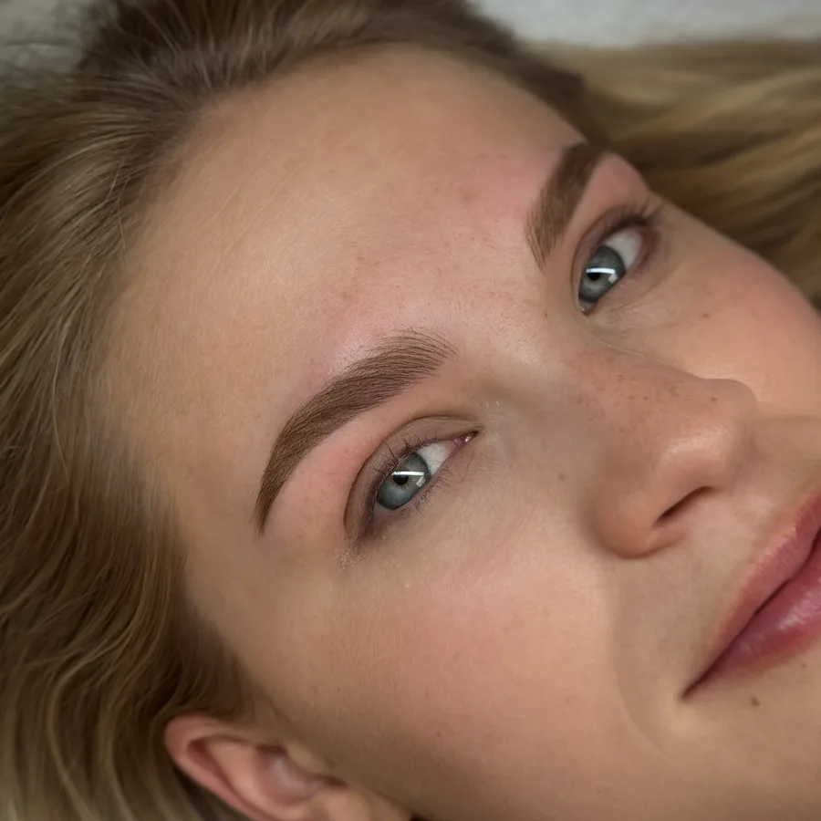
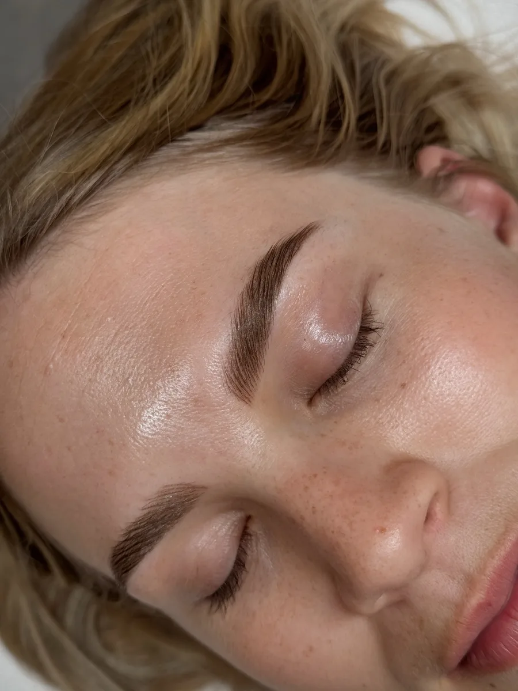
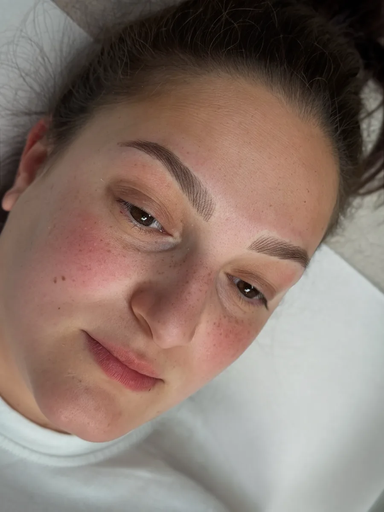
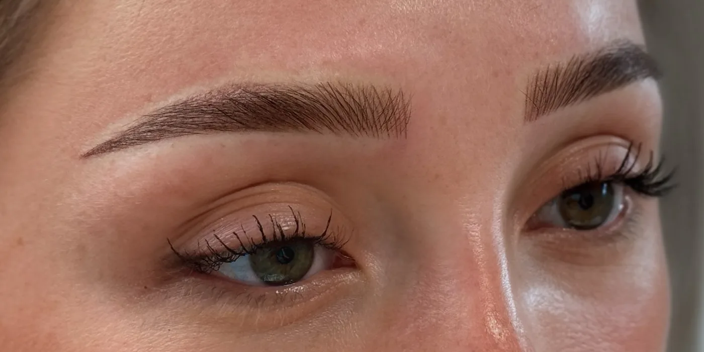
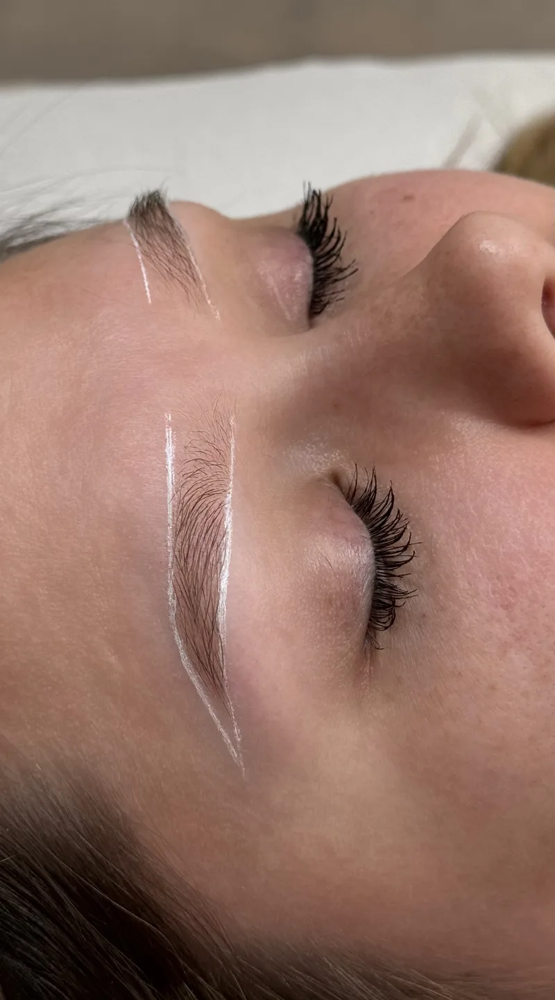

Van zachte schaduw tot haartjes die je echt wil aanraken
Elke behandeling start met een predraw. We tekenen eerst, je kijkt mee, en pas als jij ja zegt pakken we de naald.

Nano hairstrokes
Onze favoriet. Met een flinterdunne naald zetten we losse haartjes tussen je eigen haren. Voller, strakker, en toch ziet niemand dat er semi permanente make-up op zit.
- Ideaal bij dunne of lichte wenkbrauwen, of als je eigen brows nooit helemaal willen meewerken
- Ook mooi om oude microblading weer fris en zacht te krijgen
- We werken met de pigmenten van Etalon, afgestemd op je huid en haarkleur
Een predraw als aparte consultatie kost € 30.

Combi brows
Luchtige haartjes vooraan, een zachte poederschaduw naar achteren toe. Natural but defined, zoals we het zelf graag zeggen. Je ziet er 's ochtends meteen af uit, ook na het zwemmen.
- Fluffy fronts en een afgewerkte staart
- Waterproof, dus geen potlood meer in je sporttas
- Liever volledig poederig? Dan kiezen we voor ombré of powder brows
Een touch up raden we aan om de 1,5 tot 2 jaar. Hoe lang het mooi blijft, hangt af van je huid en je nazorg.

Lamination & lashlift
Nog niet klaar voor iets semi permanents? Dan brengen we je eigen haren in vorm. Browlamination legt ze netjes omhoog, een Korean lashlift krult je wimpers vanaf de wortel.
- Hybrid tint in jouw kleur, ook in warme tinten voor roodharigen
- Klaar in één afspraak, zonder naald
- Gewoon shapen kan natuurlijk ook, vanaf € 25
Als het om meer gaat dan mooi
Onder de naam Rassure helpen Stefanie en Lau mensen die worstelen met littekens, een huidaandoening, haarverlies of het verlies van de tepelhof. Rustig, discreet en zonder haast. Alles start met een consultatie, zodat je weet wat kan voor je ook maar iets beslist.
- 3D areola reconstructieNa een borstoperatie, één of twee zijdenvanaf € 450
- Medische camouflageLittekens of pigmentverlies, kleine of grote zonevanaf € 250
- Inkless needlingVoor littekens en striemen, zonder pigmentvanaf € 100
- Haarpigmentatie en wenkbrauwen bij alopeciaOp maat, na een consultatieop aanvraag

Vers gezet en genezen








Ze rijden er graag een uur voor
4,7 op Google en 263 reviews via Salonkee. Een greep, letterlijk overgenomen.
"Bizar hoe ze erin slaagden mijn wenkbrauwen zo perfect en natuurlijk te krijgen. Ik ging naar !6! andere voor ik Brows & Beyond ontdekte."
"Tijdens de predraw werd alles duidelijk uitgelegd, wat ik kon verwachten en er werd echt geluisterd naar wat ik zelf wou."
"Ik rij meer dan een uur om mijn wenkbrauwen bij Brows & Beyond te kunnen doen. I think that says enough ;)"
"Ze voelde zich op haar gemak en het resultaat is echt mega mooi geworden."
"…een super gezellige omgeving met heerlijke Ibiza vibes. Het voelt meteen ontspannen en welkom."
Stefanie leert het ook aan anderen
Wat ze zelf elke dag doet, geeft ze door tijdens trainingen met privé praktijkdagen in de studio in Herentals. Je werkt op je eigen model, met iemand naast je die dit al meer dan dertien jaar doet.
- Classic nano hairstrokes training
- Faux freckles training en masterclass
- Micropigmentatie beginnerstraining
- Areola restoration, beginners en masterclass

Zin in brows waar je 's ochtends niet meer aan denkt?
Boek online via Salonkee, of mail ons eerst met je vraag. Bij een boeking betaal je 40% voorschot, annuleren kan gratis tot 48 uur vooraf (voor SPMU en medische behandelingen tot 7 dagen).